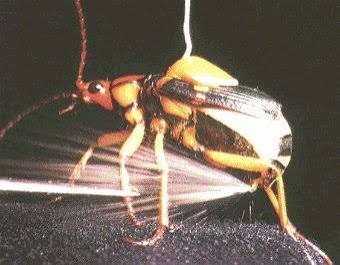
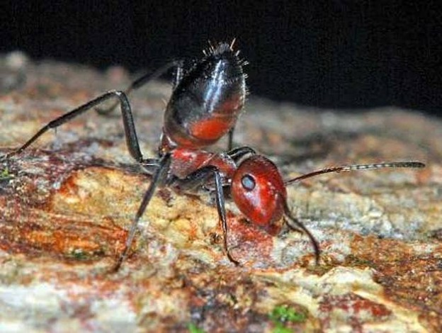
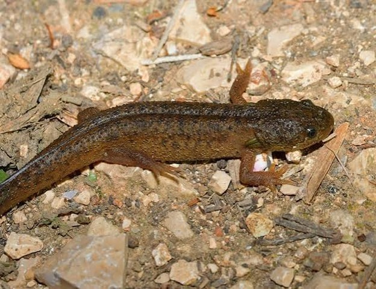
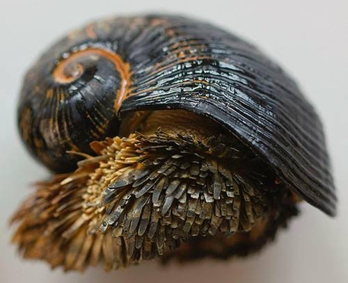

Defense

Bombardier Beetle
The bombardier beetle is a small but remarkable insect found in various habitats around the world. Despite its size, it possesses one of nature's most extraordinary defense mechanisms. When threatened, the beetle mixes chemicals inside a specialized chamber in its abdomen, creating a rapid reaction that produces a boiling-hot, irritating spray. Reaching temperatures near 100°C (212°F), this chemical blast can be aimed at predators to drive them away. With its incredible chemical defenses, the bombardier beetle proves that even the smallest creatures can pack a powerful punch!

Exploding Ant
The exploding ant (Colobopsis explodens) is a remarkable species of ant found in the tropical rainforests of Southeast Asia. Despite its small size, it possesses one of nature's most extreme defense mechanisms. When threatened, certain worker ants can contract their muscles so forcefully that their bodies rupture, releasing a sticky, toxic yellow substance onto their enemies. This unusual defense can repel or immobilize attackers, but it comes at the ultimate cost: the ant's life. By sacrificing themselves to protect their colony, exploding ants demonstrate one of the most extraordinary survival strategies in the animal kingdom!

Spanish Ribbed Newt
The Spanish ribbed newt (Pleurodeles waltl) is a fascinating amphibian found in parts of Spain, Portugal, and Morocco. Despite its harmless appearance, it possesses one of nature's most bizarre defense mechanisms. When threatened, the newt can rotate its ribs forward, forcing their sharp tips through its skin to create a series of deadly spikes. These exposed ribs become coated in toxic skin secretions, turning the newt's own skeleton into a poisonous weapon. Remarkably, the newt can heal the resulting wounds without lasting damage.

Iron Snail
The scaly-foot gastropod (Chrysomallon squamiferum), also known as the iron snail, is an extraordinary deep-sea creature found near hydrothermal vents in the Indian Ocean. Despite its small size, it possesses one of nature's most remarkable defenses: armor reinforced with actual iron minerals! Its shell has an outer layer containing iron sulfides, while its foot is covered in hundreds of protective, overlapping scales that can also contain these minerals. This natural armor helps protect the snail in its harsh underwater environment. With its metal-reinforced shell and unusual appearance, the iron snail seems more like an armored alien than an ordinary sea creature!